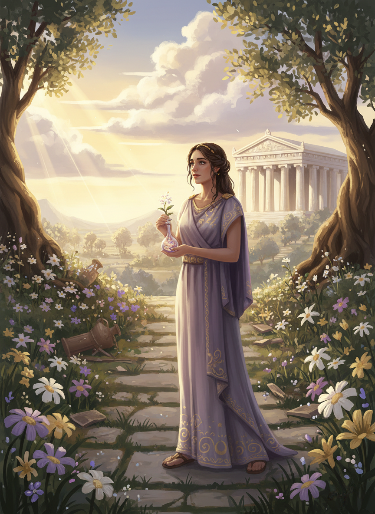

How to play
←
↑
↓
→
walk
E
talk, plant, use
Enter
continue
Esc
skip the prologue
Circe's Garden
Made by Sam Cloutier
with Claude Code
How it was made ↗
Your browser does not support the canvas tag.
Your browser does not support JavaScript.

Circe's Garden
A short story from the island of Aiaia
Waking the island…
←
↑
↓
→
walk ·
E
talk ·
Enter
continue
This game needs a keyboard. On a phone, come back on a laptop to play.